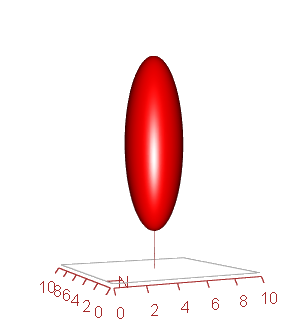

Introduction
This page describes input and output files of Maespa (and Maestra). It is not intended as a full scientific description of the inner workings of the model. Please see the bibliography page for publications describing the submodels, and Medlyn (2004) (pdf), Medlyn et al. (2007) and Duursma and Medlyn (2012) for a more comprehensive overview. The soil water and energy balance routines and soil-plant hydraulic pathway are described in detail in Duursma and Medlyn (2012).
Because Maespa is an individual-based model, where individual plants are specified with spatially explicit coordinates, great care must be taken to specify the tree locations. When calculating the stand water balance (in Maespa mode), this needs special attention as the water balance is calculated for the stand, but tree water use is calculated for a set of individual trees. Please read this section in detail before setting up your own simulations.
Maestra or Maespa?
The original Maestra model and the newer Maespa model use the same code base. If you want to run Maespa, which includes water balance routines, plant hydraulics, and soil evaporation, you simply have to add one input file (watpars.dat). If it is not present in the directory where you run Maespa, the model will run in Maestra mode. That way, the model is consistent with the legacy Maestra model (with some minor changes).
Input and output files
The table below list the required and optional input files. All files must be present in the same directory as the executable. The next table shows the output files produced by Maespa.
| trees.dat | Tree size and location information | Mandatory |
| str.dat | Stand structure information | Mandatory |
| confile.dat | Simulation control parameters | Mandatory |
| phy.dat | Leaf physiology model parameters | Mandatory |
| met.dat | Meteorological drivers, site location | Mandatory |
| watpars.dat | Water balance, soil and plant hydraulics. If omitted, model is run in Maestra mode |
Optional |
| points.dat | Coordinates of test points | Optional |
| ustorey.dat | Understorey parameters | Optional |
| hrflux.dat | Hourly flux files, contains all flux estimates for each target tree for each timestep | Optional (recommended) |
| dayflx.dat | Daily flux files, contains totals per tree for all flux estimates | Always |
| Maeserr.dat | Maespa error messages and warnings | Always |
| watbal.dat | Water balance calculations for each timestep | If run in Maespa mode |
| watbalday.dat | Daily summaries of water balance calculations | If run in Maespa mode |
| tutd.dat | Input / output file with diffuse transmittances | Optional |
| Other water balance output | watballay.dat, watupt.dat, watsoilt.dat | If run in Maespa mode |
| testflx.dat | Output for test grid points | Optional |
| layflx.dat | Output by canopy layer | Optional |
Setting up the stand for Maespa
The Maespa model is an individual-based model, but the soil water balance is calculated for the average stand (or for a single tree). Some care must be taken to correctly specify the target trees to scale up the water use from individual trees to a spatial average.
There are several options to run the model, which depends on the purpose of your simulation. Below are the most obvious choices.
1. Simulate a small subplot of trees surrounded by rows of other trees, calculate the soil water balance only for the subplot
Example applications: The soil water balance is measured on a small plot of trees, for example a subplot of a replicated study with a number of treatments (or species) (see Figure below). The surrounding trees are used in the simulation to take into account the shading by neighboring trees.
This is a situation where non-target trees in a stand (the green trees in the above figure) should not be used to calculate the soil water balance of the target trees : they are not the same species (or perhaps in other applications, of different size or structure).
To set up your simulation like this, make sure to set USESTAND = 0 in the WATCONTROL namelist in watpars.dat. Also, make sure you set the target trees correctly (in confile.dat). Also make sure that the plot area is set correctly (see examples above), by setting X0, XMAX, Y0 and YMAX in watpars.dat (Note: see the description of the control file for tips on how to set the target trees).
2. Simulate an entire stand, using a subset of trees to drive the water balance
Example application: simulate the soil water balance of an entire stand of trees, based on a sample of target trees (these could be trees on which sapflow was measured, for example). See the Figure for an example layout.
In this situation, radiation capture, water use and photosynthesis are only calculated for a sample of target trees (shown in red) dispersed throughout the stand. The user needs to decide carefully how to choose the target trees, as their performance will be used to scale to the stand total transpiration (see the next section on Canopy transpiration). This problem is no different from typical field studies where a sample of trees is instrumented with sap flow instruments, from which stand totals are calculated (using some appropriate assumptions for scaling). To avoid this problem altogether, it is possible to simply use all trees in the stand for a simulation, but this can be very slow if there are several hundred trees in the stand or more. It is recommended to the user to experiment with different layouts of the target trees (and also note that it is possible to exclude trees on the edge of the plot, by setting the EDGE parameter in the TREESCON namelist in confile.dat (see this section of the manual).
To set up your simulation, make sure USESTAND = 1 in the WATCONTROL namelist in watpars.dat (the default), and that you have chosen the target trees wisely. The output files dayflx.dat and hrflux.dat will give the tree-scale outputs (of your target trees), while watbal.dat will give the stand-scale estimates of transpiration (and many other variables).
3. Simulate a single tree, and calculate the soil water balance using the simulated water use by this single tree only.
Example applications: a single tree growing in a pot, or a tree growing in a natural stand, when the rooted soil volume is known.
Because Maespa was not originally set up for this situation, the user has to specify a few different settings (in different input files). Be careful, because if you forget one of them, the simulation will not behave as intended.
First, specify the target tree in confile.dat. For example, if your target tree is the 25th tree specified in trees.dat, the ITARGETS namelist in confile.dat will look like:
- &TREESCON
- ITARGETS = 25
- NOTREES = 101
- /
Recall that NOTREES specifies the number of neighboring trees that are used to calculate shading of the target tree (in this case I use all 101 trees in the trees.dat file). Or, you could just simulate a single tree that is not being shaded by any trees, by including only one tree in the trees.dat file.
Next, we need to specify in Maespa that the soil water balance will be calculated using the transpiration rate from the target trees only. This is done by setting USESTAND = 0 in the WATCONTROL namelist (watpars.dat).
Finally, we need to specify the (rooted) soil volume available to the virtual tree. This is done in two steps: the soil depth, and the 'plot area'. The soil depth is the number of soil layers times the depth of each of the layers. For example, suppose you have the following settings in the watpars.dat file. You specified NROOTLAYER = 10 in the ROOTPARS namelist (i.e., the top 10 soil layers have roots), and LAYTHICK = 0.1 in the LAYPARS namelist. Then, obviously, the total rooted soil depth is 1 m. The area of the plot is set by the PLOT namelist in the trees.dat file : it is calculated as (XMAX - X0) * (YMAX - Y0). For example, if your PLOT namelist looks like,
- &TREESCON
- X0 = 0
- Y0 = 0
- XMAX = 2
- YMAX = 2
- NOTREES = 101
- /
Then your plot area is 2 m2, and combine this with your soil depth of 1m, you have a total soil volume of 2 m3.
Canopy transpiration
MAESPA calculates tree transpiration with the Penman-Monteith equation. This is done for each tree separately, because canopy conductance varies between trees as a result of radiation interception (and possibly, parameters such as VCMAX). The tree-level conductance (GSCAN) is in units of mol CO2 tree-1 s-1. The first step is to get the average canopy conductance across the target trees (GSCANAV). This canopy conductance is representative of the target trees, but can be a biased representation of the whole stand if the average leaf area of the target trees is not equal to that of all trees in the stand. To remedy this problem, GSCANAV is scaled by leaf area:
GSCANAV = GSCANAV * (ALLTREELAMEAN / TREELAMEAN)
Where ALLTREELAMEAN is the average tree leaf area for all trees in the stand, TREELAMEAN the average leaf area of the target trees.
Note that this scaling is only done when USESTAND = 1 in the confile.dat input file (see previous section).
Input File Format
The input files for Maespa use the Fortran namelist format. In this manual we use the notation:
NAMELIST /NAME/ VAR1, VAR2
to indicate a namelist. In the actual input file, the above namelist should be written like this:
- &NAME
- VAR1=0.05
- VAR2=370.1
- /
Arrays of numbers should be specified as space-separated numbers:
- &NAME
- VAR2= 0.05 370.1
- /
It does not matter what order these namelists are in. Within a namelist, it does not matter what order the variables are in, except that all arrays of strings (such as lists of dates) should come last. It does not matter if some variables are missing, but you will, however, get an error if there are additional variables in any namelist. If some data is missing which is essential for the program to run, the program writes an error message to the error output file maeserr.dat, and terminates. If data is missing for which a default value can be used, a warning notice will be written to maeserr.dat, but the program will continue, using the default value.
All dates are specified in the format 'DD/MM/YY'. If 50 <= YY <= 99, the years 1950 - 1999 are assumed; if 00 <= YY <= 49 the years 2000 - 2049 are assumed. This will need to be fixed come the 2040's - hopefully by someone else!
Maximum array sizes: all the maximum array sizes are defined in the file maestcom.f90. These maxima can be changed by altering maestcom.f90 and re-compiling the program. The maxumum sizes are now quite large so this should rarely be needed.
The control file (confile.dat)
The first line can include the title of the file, which is used to indicate in the output which input file was used.
Following that, all input is in namelists, which may be in any order.
Control of output files
NAMELIST /CONTROL/ IOHRLY, IOTUTD, IOHIST, IORESP, ISIMUS, IPOINTS
IOHRLY is a flag to indicate how detailed the outputs should be. If IOHRLY = 0, there is no hourly output; if IOHRLY = 1, hourly values are output to hrflux.dat; if IOHRLY = 2, values for each layer are output to layflx.dat. Default: 0.
IOTUTD is a flag to indicate how often the diffuse transmittances should be calculated. This calculation takes a significant amount of time, and does not really need to be done more than once a week unless the leaf area is changing rapidly (the diffuse transmittances do not change greatly from day to day). If IOTUTD > 0, the transmittances are calculated every TUTD'th day. Default: 1.
IOHIST is a flag to indicate that you want the PAR histogram printed out. The histogram is only printed if IOHIST = 1. Default: IOHIST = 0.
IORESP is a flag to indicate whether you want the respiration fluxes to be printed out. If IORESP = 1, the file resp.dat is created. Default: IORESP = 0.
ISIMUS is a flag to indicate whether you want the understorey calculations to be done. If ISIMUS = 1, the input file ustorey.dat is required, and the file uspar.dat is created.
IPOINTS is a flag to indicate whether you want to output PAR transmission data to user-defined points. See the description of the points.dat input file for instructions.
Dates
NAMELIST /DATES/ START, END
START is the starting date for the simulation, in format 'DD/MM/YY'. END is the end date for the simulation, in format 'DD/MM/YY'. Default: if both dates are missing or both = '01/01/50', then all of the met data in the met data file is used.
Number of Trees in Calculations
NAMELIST /TREESCON/ NOTREES, NOTARGET, ITARGETS, NORANDOM, EDGEDIST
NOTREES is the number of surrounding trees considered when calculating the shading of the target tree (the closest trees to the target tree are used).
You can specify the target tree(s) in a number of ways:
- You can specify the number of a single target tree using NOTARGET. (Where 1 refers to the first tree listed in the trees.dat file, and so on).
- To specify a series of target trees, use the array ITARGETS instead, e.g.
ITARGETS = 2 12 15 18 25
You can specify up to MAXT target trees in this way. - To make the program choose target trees randomly, set NORANDOM to the number of target trees you want. If you only want trees from the centre of the plot to be chosen, set EDGEDIST to the width of the plot edges (in m).
- Finally, if you want the program to do the calculations for all trees, then omit all of NOTARGET, ITARGETS, and NORANDOM. Again, if you do not want to include trees around the edge of the plot, you can specify the edge width using EDGEDIST (in m). Trees within this distance from the edge will not be used as target trees (but they will be used to calculate shading on the target trees).
Multi-species settings
NAMELIST /SPECIES/ NSPECIES,SPECIESNAMES,PHYFILES,STRFILES
This namelist allows multi-species stands of trees. NSPECIES is the number of species in the stand. SPECIESNAMES is an array of names of the species, this is shown in the output files but not otherwise used. PHYFILES is an array of names of the physiology input files, the first corresponding to species 1, etc. STRFILES is an array of structure input files (to override str.dat if it exists). Note that if NSPECIES is set to 1, but an array of STRFILES or PHYFILES is defined, only the first one is used (and the standard phy.dat and str.dat files are not used!).
Here is an example namelist:
&SPECIES
NSPECIES=3
SPECIESNAMES='E.sclerophylla' 'E.crebra' 'E.sparsifolia'
PHYFILES='physcler.dat' 'phycreb.dat' 'physpar.dat'
STRFILES='strscler.dat' 'strcreb.dat' 'strspar.dat'
/
The multi-species setting also needs another namelist in the trees.dat file, that specifies which trees are of which species. See further below for details on that namelist.
Number of layers and angles to integrate over
NAMELIST /DIFFANG/ NOLAY, PPLAY, NZEN, NAZ
NOLAY is the number of layers in the crown assumed when calculating radiation interception. PPLAY is the number of points per layer (this must be divisble by 4, if it is not the closest smaller number divisible by 4 is used). The maximum number of layers is given in maestcom.f90 as MAXLAY. Default: 6.
NZEN is the number of zenith angles for which diffuse transmittances are calculated; NAZ is the number of azimuth angles for which the calculation is done.
Defaults: NZEN = 5 (maximum MAXANG); NAZ = 11 (no maximum enforced).
Choice of submodel
NAMELIST /MODEL/ MODELGS, MODELJM, MODELRD, MODELRW, MODELSS, ITERMAX
MODELGS indicates which model should be used to calculate stomatal conductance. If MODELGS = 2: Ball-Berry model (response to RH) If MODELGS = 3: Ball-Berry-Leuning model (response to VPD). If MODELGS = 4, the Ball-Berry-Opti model is used (Medlyn et al. 2011).
Please see the section on stomatal conductance for more details about the choice of stomatal models.
MODELJM indicates how the JMAX and VCMAX parameters should be read in. IF MODELJM = 0, they are read in directly from file. If MODELJM = 1, they are calculated from the leaf N content. Default: 0.
MODELRD indicates how the RD0 parameters should be read in. IF MODELRD = 0, they are read in directly from file. If MODELRD = 1, they are calculated from the leaf N content. Default: 0.
MODELRW indicates how the wood respiration parameters should be read in. If MODELRW = 0, the respiration rate is assumed to depend on stem biomass or surface area. If MODELRW = 1, it depends on diameter according to the relationship used at Collelongo. Default: 0.
MODELSS indicates whether the photosynthesis calculations are done for sun and shade leaves separately (MODELSS = 0), whether the absorbed radiation is averaged over the foliage in the grid point when calculating photosynthesis (MODELSS = 1). If MODELSS = 2, calculations are done for each leaf angle class separately. Default: 0.
ITERMAX controls iterations in the combined photosynthesis-transpiration model. If ITERMAX = 0, leaf temperature is assumed = air temperature, and the iteration procedure is not carried out. If ITERMAX > 0, an iterative method is used to find leaf temperature, photosynthesis, and transpiration. ITERMAX gives the maximum number of iterations (ensuring convergence). Default: 0.
Climate change scenarios
The program can add a fixed amount to CO2 concentration and temperature from the met file. The following namelist is only needed if you want a scenario implemented:
NAMELIST /CCSCEN/ CO2INC, TINC
where CO2INC is the amount of increase in the CO2 concentration (in mu mol mol-1) and TINC is the amount of increase in the air temperature (°C). Both soil and air temperature are increased. The absolute humidity (in g m-3) is maintained constant; RH and VPD are adjusted accordingly.
Effect of OTC on Met Data
If you are simulating growth within an open-top chamber (OTC) or other controlled environment and met data was measured outside the chamber you may want to correct for the effects of the chamber. This can be done using the namelist:
NAMELIST /OTC/ TOTC, WINDOTC, PAROTC, FBEAMOTC
Where TOTC is the increase in air temperature (degC), WINDOTC is the absolute wind speed inside the chamber (m s-1), PAROTC is the fractional reduction in incident PAR (fraction) and FBEAMOTC is the fractional reduction in beam fraction of PAR (fraction). Only one value can be specified for each parameter.
PAR histogram
The program can print out a histogram of PAR absorbed over the course of the simulation. It is printed to histo.dat if IOHIST = 1 (in the CONTROL namelist, above). The following namelist is needed only if you want the histogram:
NAMELIST /HISTO/ BINSIZE
where BINSIZE is the size of the classes in the histogram (in mu mol m-2 s-1). The maximum number of classes is given by MAXHISTO in maestcom.f90.
The trees file (trees.dat)
First line: title of file (as with other input files, the title is included in the output files)
Following that, all input is in namelist blocks, which may be in any order.
Plot Details
NAMELIST /PLOT/ XMAX,YMAX,X0,Y0,NOTREES,XSLOPE,YSLOPE,BEARING,SHADEHT
XMAX and YMAX are the maximum x and y coordinates of tree locations, respectively (m) - essential. X0 and Y0 are offset values for the co-ordinates and are zero by default. As an example: if your x co-ordinate begins at 500 and goes to 600, X0 should be 500 and XMAX should be 600. In the model, the plot size is calculated as (YMAX - Y0) * (XMAX - X0). The plotsize is used in scaling up the water use of the stand when run in Maespa mode, in Maestra mode the plotsize has no consequences.
NOTREES is the total number of trees in the plot - essential. XSLOPE and YSLOPE are the slopes of the plot in x- and y- directions (degrees) - default zero. BEARING is the bearing of the x-axis from SOUTH (degrees) - essential. The stocking is given by NOTREES / (XMAX * YMAX).
SHADEHT is a parameter to describe external shading of the plot, e.g. for shadecloth placed over a greenhouse. The greenhouse is assumed to be rectangular with corners at co-ordinates (0,0), (0,YMAX), (XMAX,0), (XMAX,YMAX). The shadecloth is assumed to be SHADEHT m high. It is assumed that no radiation passes through the shadecloth. Default: SHADEHT = 0.0 (i.e. no shading).
Plot Aerodynamics
NAMELIST /AERODYN/ ZHT, ZPD, Z0HT
Transpiration rate is calculated from the conductance of the whole canopy, as well as by applying the coupled photosynthesis-stomatal conductance model at each grid point in the canopy (and summed). Both are output in hrflux.dat for comparison. The canopy stomatal conductance is calculated as the sum of the individual leaf conductances. The canopy boundary layer conductance is calculated from
gb = K2 * U / (LN((ZHT - ZPD)/Z0HT))2
(Jones 1992 eqn. 3.42). U is the above-canopy wind speed, K is von Karman's constant (defined in maestcom.f90), and the parameters required are ZHT (measurement height, m), ZPD (zero-plane displacement, m) and Z0HT (roughness length, m). If these parameters aren't specified, this calculation is not done.
Multi-species list
NAMELIST /SPECLIST/ ISPECIES
Here, the species of each tree is specified. ISPECIES is an array of integers (1,2,...) that correspond to the multi-species definitions in confile.dat. See here for those settings. If any of the ISPECIES values is set to a value higher than NSPECIES, a warning is printed to maeserr.dat, and all species are set to 1.
X & Y Co-ordinates
NAMELIST /XY/ XYCOORDS
The X and Y co-ordinates of each tree can be specified explicitly in this namelist, in order x1, y1, x2, y2, .. etc. Alternatively, if this namelist is missing, then the trees will be assumed to be spaced evenly at a distance of SQRT(XMAX*YMAX / NOALLTREES).
Tree Dimensions - Specified for Individual Trees
NAMELIST /INDIVRADX/ NODATES, VALUES, DATES
NAMELIST /INDIVRADY/ NODATES, VALUES, DATES
NAMELIST /INDIVHTCROWN/ NODATES, VALUES, DATES
NAMELIST /INDIVHTTRUNK/ NODATES, VALUES, DATES
NAMELIST /INDIVDIAM/ NODATES, VALUES, DATES
NAMELIST /INDIVLAREA/ NODATES, VALUES, DATES
The tree dimensions (the radii of the crowns in both X and Y directions (in m), the height of the crown and the trunk space (both in m), the stem diameter (in m) and the leaf area (in m2) can be specified for each tree individually, using these namelists. They can be specified on a series of dates - linear interpolation is used between those dates.
INDIVLAREA denotes the total leaf area of the individual tree (normally as half-total surface area).
If they are to be constant throughout the simulation, then NODATES should be 1. DATES can be omitted. VALUES should be given in order of tree number.
If they are specified for a series of dates, then both NODATES and DATES should be given - the dates in format 'DD/MM/YY'. The values should be given in a table with a row for each tree and a column for each date.
The stem diameter is only used for calculating the woody respiration. If it is missing, woody respiration is not calculated. If any of the other dimensions are missing, an error will occur. The stem diameter should be specified at the height required for the allometric relationship between height, diameter, and woody biomass.
Tree Dimensions - Specified for All Trees
NAMELIST /ALLRADX/ NODATES, VALUES, DATES
NAMELIST /ALLRADY/ NODATES, VALUES, DATES
NAMELIST /ALLHTCROWN/ NODATES, VALUES, DATES
NAMELIST /ALLHTTRUNK/ NODATES, VALUES, DATES
NAMELIST /ALLDIAM/ NODATES, VALUES, DATES
NAMELIST /ALLLAREA/ NODATES, VALUES, DATES
Alternatively, the tree dimensions (the radii of the crowns in both X and Y directions, the height of the crown and the trunk space, stem diameter and the leaf area (in m2) can be assumed to be the same for all trees, and the common values input using these namelists. As for the dimensions for individual trees, the dimensions of all trees can be specified on a series of dates, with linear interpolation being used between those dates.
If the values are to be constant throughout the simulation, then NODATES should be 1, DATES can be omitted, and VALUES should just consist of the single number.
If the values are specified for a series of a dates, then both NODATES and DATES should be given - the dates in format 'DD/MM/YY'. The values should be given in date order.
It is not necessary to use the same format for all dimensions - for example, the height of all trees may be assumed the same, whereas leaf area may be specified for each tree. Similarly, different dates may be given for each dimension - height may be constant throughout the simulation, with leaf area changing.
Phenology of leaf area development
The development of leaf area may be modelled by specifying leaf area on different dates, or by using the phenology model described by Wang et al. (1998). To use this phenology model, replace the INDIVLAREA or ALLLAREA namelist by the following:
NAMELIST /PHENOLOGY/ FLUSHDATE, DT1, DT2, DT3, DT4, EXPTIME, MAXLEAVES, SIZELEAF
where FLUSHDATE is the date of flushing ('DD/MM/YY'); DT1, DT2, DT3, and DT4 are the number of days from the flush date to the end of the first flush, end of the second flush, start of leaf senescence, and end of leaf senescence, respectively; EXPTIME is the time taken for a single leaf to fully expand (days); MAXLEAVES is the maximum number of leaves, and SIZELEAF is the mean leaf size (m2). The maximum leaf area is thus given by MAXLEAVES*SIZELEAF. It is currently assumed, using this model, that all trees have the same leaf area.
The met file (met.dat)
The met.dat file contains the meteorological observations that drive Maespa, including temperature, radiation, air humidity.
The first line of the file is the title, which is shown in the output files.This is followed by several namelists (described below).Then there is the line
DATA STARTS
followed by the actual (space-delimited) data. Note that the line DATA STARTS must be in exactly that format, ie caps, and no tabs or following blank spaces.
Constant met data
NAMELIST /ENVIRON/ CA, PRESS, DIFSKY, SWMIN, SWMAX
This namelist is essential.CA is the atmospheric CO2 concentration, in mu mol mol-1, which is assumed not to vary with time. This value is only used if the 'CA' column is missing from the met file. If there is no value of CA in either met or phy files, an error will occur.
PRESS is the atmospheric pressure, in Pa, also assumed not to vary with time. This value is only used if the 'PRESS' column is missing from the met file. The default value for PRESS is 1.0125 * 105 Pa.
DIFSKY controls the distribution of diffuse radiation incident from the sky. The distribution function is given by
Γ(q) = (1 + DIFSKY*cos(θ)) / (1 + 2/π DIFSKY)
For a uniform overcast sky, DIFSKY = 0.0 (default). See Wang and Jarvis (1990 Silva Carelica 15:167-180) and Steven & Unsworth (1980 Quart. J. Roy. Meteorol. Soc. 105: 593-602) for more information about DIFSKY.
Latitude & Longitude
NAMELIST /LATLONG/ LATHEM,LAT,LONHEM,LONG,TZLONG
LATHEM is either 'N' or 'S', indicating the hemisphere. Similarly, LONHEM is either 'W' or 'E'. LAT and LONG are the latitude and longitude, respectively. Both are arrays of three numbers, indicating the degrees, minutes, and seconds. TZLONG is the longitude of the meridian of the time zone, specified in degrees.
Daily temperature amplitude
NAMELIST /BRISTO/ DELTAT
If incident radiation values are missing, the program can use the formula of Bristow and Campbell (1984 Ag For Met 31: 159-166) to calculate incident PAR from air temperature. To use this option the above namelist must be specified. DELTAT should have 12 values representing the mean monthly daily temperature amplitude for each month of the year.
Metformat
NAMELIST /METFORMAT/ DAYORHR, KHRSPERDAY, NOCOLUMNS, COLUMNS, STARTDATE, ENDDATE
Note: The format of this namelist was modified in April 2009, older files need to be reformatted accordingly.
DAYORHR is a flag indicating whether the met file is daily (DAYORHR = 0) or 'hourly' (DAYORHR = 1) data.
KHRSPERDAY is the number of timesteps per day. For example, if the input data are hourly, this should be set to 24. There is no longer a need to recompile if this setting is changed. The maximum number of timesteps per day is set at 1440 (minutely input data).
Note: If the input data are daily, KHRSPERDAY should still be set to 24 or 48, depending on how many calculations should be performed per day (which affects daily totals as well). It is recommended to set it to 48 when using daily data.
STARTDATE and ENDDATE are the start and end dates of the met data, respectively ('DD/MM/YY').
NOCOLUMNS gives the number of columns of meteorological data, and COLUMNS is a list of names describing the content of each column. The following names are recognised:
For hourly data
| Name | Units | Definition | If not specified |
| 'WIND' | m s-1 | wind speed above the canopy | Assumed = DEFWIND (defined in maestcom.f90) |
| 'TAIR' | ºC | air temperature | Error. |
| 'TSOIL' | ºC | soil temperature | Assumed = TAIR |
| 'RH' | fraction | relative humidity | Calculated from VPD, VMFD or TAIR |
| 'RH%' | percent | relative humidity (different units) | Calculated from VPD, VMFD or TAIR |
| 'VPD' | Pa | vapour pressure deficit | Calculated fromc RH, VMFD or TAIR |
| 'VMFD' | mmol mol-1 | vapour pressure mole fraction deficit | Calculated from RH or VPD, and PRESS |
| 'CA' | ppm | atmospheric CO2 concentration | Constant value from ENVIRON namelist used. |
| 'PAR' | mu mol m-2s-1 | hourly incident photosynthetically active radiation | Calculated from RAD. If RAD absent, calculated from TAIR (DELTAT needed). |
| 'RAD' | W m-2 | hourly incident total short-wave radiation | Calculated from 'PAR'. If PAR absent, calculated from TAIR (DELTAT needed). |
| 'FBEAM' | fraction | fraction of incident PAR which is direct-beam | Calculated from PAR (Spitters et al 1986) |
| 'PRESS' | Pa | atmospheric pressure | Constant value from ENVIRON namelist used. |
| 'TDEW' | ºC | Dewpoint temperature | RH or VPD used. |
| 'SW' | Same as SWMAX | Soil water content. | Not used. |
| 'SWP' | MPa | Soil water potential. | Use soil water content, or nothing. |
| 'PPT' | mm | Precipitation. | Assume zero precipitation. |
For daily data
| Name | Units | Definition | If not specified |
| 'WIND' | m s-1 | wind speed above the canopy | Assumed to be zero. |
| 'TMIN' | ºC | minimum daily temperature | Error. |
| 'TMAX' | ºC | maximum daily temperature | Error. |
| 'CA' | ppm | atmospheric CO2 concentration | Constant value from ENVIRON namelist used. |
| 'PAR' or 'SI' | MJ d-1 | daily incident radiation (PAR = photosynthetically active radiation, 400 - 700 nm; SI = total shortwave radiation) | Error. |
| 'FBEAM' | fraction | fraction (0-1) of incident PAR which is direct-beam | Calculated from PAR (Spitters et al 1986) |
| 'SW' | Same as SWMAX | Soil water content. | Not used. |
| 'SWP' | MPa | Soil water potential. | Use soil water content, or nothing. |
| 'PPT' | mm | Precipitation. | Assume zero precipitation. |
It doesn't matter what order these columns are in, so long as the columns of data correspond to the titles in the namelist. The available options are fairly readily extended through the functions OPENMETF, GETMETHR and GETMETDAY. Additional (unused) columns should be identified by some other name to those above; they will then be ignored by the program.
Missing data
The program does not handle missing met data at all, all data must be specified. Note that each new line of data is assumed to correspond to a timestep, it is not possible to indicate the time of the timestep. Make sure that when preparing the met data, that you have the same number of timesteps for each day (for example 24 or 48).
The structure file (str.dat)
As with the other input files, the first line contains an optional title of the file used in the output files. Following that, all input is in the following namelists.
Crown shape
NAMELIST /CANOPY/ CSHAPE
CSHAPE is a string indicating the shape of the crown: 'CONE' indicates a conical crown, 'ELIP' a half-ellipsoidal crown, 'PARA' a paraboloidal crown, 'ROUND' a full ellipsoid, 'CYL' an upright cylinder, 'BOX' a box shape (suitable for the mini-ecosystems, for example). Default: half-ellipsoidal.
Leaf incidence angle
NAMELIST /LIA/ ELP,NALPHA,FALPHA,AVGANG
This namelist describes the leaf angle distribution, used in the radiative transfer calculations. There are three options to specify this namelist:
(a) AVGANG > 0
The mean leaf inclination angle is specified by AVGANG. If NALPHA = 1, there is just on leaf angle class with angle AVGANG. If NALPHA > 1, AVGANG is used to generate the LIA distribution assuming an elliptical distribution.
(b) ELP > 0.0
ELP is the parameter of an ellipsoidal leaf angle distribution: it represents the ratio of the horizontal and vertical axes of an ellipsoid. If ELP = 1, the distribution is spherical; if ELP = 0.5, the distribution is erectophile; and if ELP = 2, the distribution is planophile. If NALPHA = 1: there is just one leaf angle class, and the average leaf angle is given by AVGANG or AVGANG(ELP). If NALPHA > 1 (max 9): there are NALPHA leaf angle classes, and the distribution of angles is elliptical with parameter ELP.
(c) ELP < 0.0
The proportion of leaf area in each angle class is read in from array FALPHA. The number of angle classes is given by NALPHA (max 9).
Default values: NALPHA = 1, ELP = 1.0 (i.e. one leaf angle class, spherical distribution).
Beta distributions for leaf area density
NAMELIST /LADD/ JLEAF,NOAGEC,BPT,RANDOM
If JLEAF = 0, the leaf area density is assumed to be uniform. If JLEAF = 1, it is assumed to follow a beta distribution in the vertical direction only. If JLEAF = 2, then it is assumed to follow beta distributions in both vertical and horizontal directions. Default: 0.
NOAGEC is the number of age classes for which beta-distributions are specified. If NOAGEP (the number of age classes for physiology parameters, specified in phy.dat) is not equal to 1, then NOAGEC must equal 1 or NOAGEP.
BPT contains the coefficients of the beta distributions for NOAGEC age classes. The beta distribution for each age class has six parameters, a, b, c, d, e, f:
f(r,h) = a hb (1-h)c d re (1 - r)f
where f(r,h) is the normalised leaf area density (see below) at relative height h (0, crown base; 1, crown top) and relative radius r (0, next to trunk; 1, exterior of canopy). The parameters should be given in the order a, b, c, d, e, f, for each age class. If JLEAF = 1, the parameters of the horizontal distribution (d,e,f) should still be given but will not be used; they can be set to zero.
Important Note: the parameters a and d must be determined from the following constraints:
(a) the integral of a \(hb(1-h)^{c}\) from h = 0 to h = 1 must = 1
(b) the integral of d \(r^{e+1}(1 - r)^{f}\) from r = 0 to r = 1 must = 1/2π
For more information about the beta distributions see Wang et al (1990 For Ecol Man 32: 217-237).
RANDOM describes the level of clumping of foliage into shoots: it is given by the ratio of projected shoot area to projected needle area. Default: 1.0.
Decline in wind speed with depth in the canopy
NAMELIST /AERO/ EXTWIND
The wind speed declines exponentially with depth in the canopy, where EXTWIND is the exponential coefficient. The windspeed at canopy depth D, W(D) is given by
W(D) = W(0)*exp(-EXTWIND*D)
Default: EXTWIND = 0. This affects the leaf boundary layer conductance, and hence the leaf transpiration rate. Note that it has no effect on the canopy-scale transpiration rate, which used the canopy boundary layer conductance only.
Allometric relationships for biomass
NAMELIST /ALLOM/ COEFFT, EXPONT, WINTERC
NAMELIST /ALLOMB/ BCOEFFT, BEXPONT, BINTERC
NAMELIST /ALLOMR/ RCOEFFT, REXPONT, RINTERC, FRFRAC
The woody biomass is calculated using the following allometric relationship:
\(WBIOM = COEFFT \cdot HEIGHT \cdot (DIAM^{EXPONT}) + WINTERC\)
where: WBIOM is the woody biomass (in kg DW tree-1), HEIGHT is the total height of the tree in m (green height + trunk length), DIAM is the stem diameter in m, and COEFFT, EXPONT and WINTERC are parameters. The diameter should be specified (in trees.dat) at the height for which they were used to develop this allometric relationship. The woody biomass is only used to calculate the woody respiration rate.
Branch biomass and total root biomass are calculated using the same equations, again from stem height and diameter, but using different parameters. Fine root biomass is assumed to be a constant fraction (FRFRAC) of total root biomass. Again, these biomass estimates are only used to calculate respiration rates.
The physiology file (phy.dat)
As with the other input files, the first line contains an optional title of the file used in the output files. Following that, all input is in the following namelists.
Number of age classes of foliage
NAMELIST /NOAGES/ NOAGEP
NOAGEP is the number of age classes for which physiological parameters are specified. If NOAGEC (the number of age classes for which leaf area density distributions are specified, given in str.dat) is not equal to 1, then NOAGEP must equal 1 or NOAGEC. The parameters NFOL, JMAX, VCMAX and RD can be specified for different age classes of foliage. However they do not all need to be specified for all age classes - but they must either be specified for all foliage or for NOAGEP age classes. Neither NOAGEP nor NOAGEC should exceed MAXC, specified in maestcom.f90 If NOAGEP = 1, then this namelist can be omitted.
Proportions of leaf area in each age class
NAMELIST /PHENOL/ PROP
PROP is an array containing the proportion of leaf area in each age class. This is only read in if either NOAGEP > 1 or NOAGEC > 1. NOAGEP or NOAGEC indicate how many entries there should be in this array (maximum MAXC, in maestcom.f90) Also, the entries in the array should sum to one.
Reflectance and transmittance
NAMELIST /ABSORP/ NOLAYERS,RHOSOL,ATAU,ARHO
NOLAYERS is the number of crown layers for which reflectance and transmittance are specified.
RHOSOL is the soil reflectance, in three wavebands (PAR, NIR, thermal). This affects up-welling radiation (particularly long-wave radiation, for which soil reflectance is significant).
ATAU is the leaf transmittance, also in three wavebands, and for NOLAYERS crown layers. It should be specified with the values for different layers in columns and the values for different wavelengths in rows.
ARHO is the leaf reflectance, which should be specified similarly to ATAU.
Stomatal conductance parameters
NAMELIST /BBGS/ G0,G1,GAMMA,WLEAF,NSIDES, SMD1, SMD2, SWPEXP, WC1, WC2
NAMELIST /BBLGS/ G0,G1,D0L,GAMMA,WLEAF,NSIDES, SMD1, SMD2 , SWPEXP, WC1, WC2
NAMELIST /BBMGS/ G0,G1,D0L,GAMMA,WLEAF,NSIDES, WC1, WC2
NAMELIST /BBTUZ/ G0,G1,SF,PSIV,GAMMA,VPDMIN,WLEAF,NSIDES
NAMELIST /BBGSCON/ CONDUNITS
The flag MODELGS (read in namelist CONTROL) indicates which stomatal conductance model is to be used, and hence, which set of parameters to read. If MODELGS = 2, BBGS is read; if MODELGS = 3, BBLGS is read; if MODELGS = 4, BBMGS; if MODELGS = 6, BBTUZ is read.
Restrictions: The Jarvis model is no longer supported in Maespa, not even when run in Maestra mode. The Tuzet model (BBTUZ) is only supported in Maespa (if the model is run in Maestra mode, and BBTUZ is selected, it stops with an error).
The namelist 'BBGSCON' controls whether the units of the stomatal conductance parameters are for CO2 or H2O. For these two options, set CONDUNITS = 'CO2' or 'H2O'. The default is to assume that the parameters are for CO2. A message is displayed in the Maeserr.dat file after running Maespa how the parameters were handled (to avoid fairly common mistakes).
For all models, WLEAF is the width of the leaf in m, used in calculating the boundary layer conductance (Leuning et al 1995 PC&E 18:1183-1200). NSIDES is the number of sides of the leaf with stomata; default 1 (set to 2 for hypostomatous leaves).
In the Ball-Berry model (BBGS), stomatal conductance is given by
gs = G0 + G1 * A * RH / (CA – GAMMA)
where gs (mol m-2 s-1) is the stomatal conductance to CO2, A (mu mol m-2 s-1) is the assimilation rate, RH is the relative humidity, CA (mu mol mol-1) is the atmospheric CO2 concentration and G0 (mol m-2 s-1), G1 (dimensionless), and GAMMA (mu mol mol-1) are input parameters.
In the Ball-Berry-Leuning model (BBLGS), stomatal conductance is given by
gs = G0 + G1 * A / (CA – GAMMA) / (1 + VPD/D0L)
where gs (mol m-2 s-1) is the stomatal conductance to CO2, A (mu mol m-2 s-1) is the assimilation rate, VPD (Pa) is the vapour pressure deficit, CA (mu mol mol-1) is the atmospheric CO2 concentration and G0 (mol m-2 s-1), G1 (dimensionless), D0L (Pa) and GAMMA (mu mol mol-1) are input parameters.
In the Ball-Berry-Opti model (BBMGS), stomatal conductance is given by
gs = G0 + G1 * A/(CA - GAMMA) / SQRT(VPD)
where all units are the same as in the Ball-Berry-Leuning model. This model formulation is due to Medlyn et al. (2011).
In the Tuzet model of stomatal conductance, stomatal conductance is given by
gs = G0 + G1 * A / (CA - GAMMA) * FPSIL(PSIL)
where parameters are as defined above, and FPSIL is a sigmoidal function of the leaf water potential (PSIL), which in turn is calculated as, PSIL = SWP - KTOT/ELEAF (where KTOT is the hydraulic conductance from soil to leaf, ELEAF the leaf transpiration rate, and SWP the soil water potential). This model is due to Tuzet et al. (2003, PCE 26:1097-1116), but note that we use CA in place of CI (see Duursma and Medlyn 2012 for rationale). The Tuzet model can only be used when Maespa is used (not Maestra).
The user has various options to take into account the effect of soil moisture on stomatal conductance. These options can be set by specifying (a subset of) the parameters SMD1, SMD2, SWEXP or WC1 and WC2. If none of these parameters are set, and the model is run in Maespa mode (but not with the Tuzet model), the 'maximum transpiration rate' (cf. Duursma et al. 2008) is used. Since this is the recommended setting, we suggest parameters in the watpars.dat file are chosen carefully in order to simulate effects of soil water stress on stomatal conductance.
Alternatively, a simple modifier function can be specified that will be used to reduce stomatal conductance. This can either be a function of the volumetric water content directly (a simple threshold function, see below), or of the 'soil water deficit'.
To use the soil water deficit, specify WSOILMETHOD = 4 in the WATCONTROL namelist (watpars.dat), and specify one (or two) of SMD1, SMD2 or SWEXP, depending which function is to be used. Note: this method cannot be used with the BBMGS model (for no other reason than it is not implemented).
The soil moisture deficit (q) is calculated as q = (SWMAX - SWC)/(SWMAX - SWMIN), where SWC is the volumetric water content (alternatively, the met file can give the soil moisture deficit directly). In this case the parameters SWMIN and SWMAX have to be specified in the ENVIRON namelist (met.dat).
The effect of q on stomatal conductance can be either an exponential or linear decline. The exponential relationship is given by:
f(q) = 1 – SMD1 * exp( SMD2 * q)
Both parameters SMD1 and SMD2 should be > 0. See Granier and Loustau (1994 Ag For Met 71:61-81) for further information on this function. The linear relationship is given by:
f(q) = (1-q)/SMD2
and this relationship is chosen by setting SMD1 < 0.
If the soil moisture is specified in the met file as soil water potential p, then its effect on stomatal conductance is given by:
f(p) = exp(SWPEXP * p)
Alternatively, a simple threshold function of the volumetric water content can be used. To do this, set WSOILMETHOD = 2 in the WATCONTROL namelist (watpars.dat), and specify WC1 and WC2 in the stomatal conductance namelist. If soil volumetric water content (either simulated or measured) is below WC1, stomatal conductance will be zero, if it is above WC2 there is no effect on stomatal conductance, with a linear decline between WC2 and WC1.
Water stress effects on Vcmax and Jmax
Optionally, the user can include non-stomatal limitations on photosynthesis via a dependence of Vcmax and Jmax on the soil water potential, following Zhou et al. (2013, AgForMet 182-183:204-214). A function can be specified which calculates a stress modifier (VJMOD), 1 indicates no stress (Vcmax and Jmax are equal to values specified in the physiology file), and 0 indicates complete inhibition of photosynthetic capacity as a result of water stress. This function uses the soil water potential (either the measured value provided in the met file, or the simulated root-weighted soil water potential). To use this functionality, include the following namelist in the physiology file:
/VJMAXSTRESS/ VFUN,VPARA,VPARB
where VFUN is the function that describes the stress effect on Vcmax and Jmax (0,1,or 2, see below), and VPARA and VPARB are parameters to that function.
If VFUN is 0, no stress is simulated (VJMOD is always 1). If VFUN is 1, a simple ramp function is used where VJMOD = 0 when the soil water potential (SWP) < VPARA, VJMOD = 1 when SWP > VPARB, and a linear increase when it is in between VPARA and VPARB.
When VFUN is 2, the sigmoidal function as parameterized by Zhou et al (2013) is used. This is given by,
VJMOD = (1 + EXP(VPARA*VPARB) )/ (1 + EXP(VPARA*(VPARB-SWP)))
Leaf N content
NAMELIST /NFOLCON/ NODATES, NOLAYERS, NOAGES
NAMELIST /NFOL/ DATES, VALUES
If MODELJM = 1, or MODELRD = 1, indicating leaf N is required to calculate some of the parameters, then leaf N contents are read in. These can be specified for different dates, canopy layers, and foliage age classes.
NODATES gives the number of dates (maximum MAXPDATE), NOLAYERS the number of layers (maximum MAXLAY), and NOAGES the number of ages (maximum MAXC), for which leaf N is specified. An error occurs if the total number of values < NODATES * NOLAYERS * NOAGES.
DATES gives the dates at which N contents were specified, in the format 'DD/MM/YY'. NODATES must be at least 1, but if it is only 1, then that value is used throughout the simulation.
VALUES gives the leaf N contents (in g m-2). They must be specified with the values for different layers in columns. The values for each date should be grouped together, with one row for each age class.
Photosynthetic parameters
The tables of Jmax and Vcmax (JMAXTABLE and VCMAXTABLE) may be either read in, or calculated from leaf N content. If they are read in (MODELJM = 0), the following namelists should be used:
NAMELIST /JMAXCON/ NODATES,NOLAYERS,NOAGES
NAMELIST /JMAX/ VALUES, DATES
NAMELIST /VCMAXCON/ NODATES,NOLAYERS,NOAGES
NAMELIST /VCMAX/ VALUES, DATES
In each case, NODATES gives the number of dates (maximum MAXPDATE), NOLAYERS the number of layers (maximum MAXLAY), and NOAGES the number of ages (maximum MAXC), for which leaf N is specified. An error occurs if the total number of values < NODATES * NOLAYERS * NOAGES.
DATES gives the dates at which JMAX and VCMAX were specified, in the format 'DD/MM/YY'. NODATES must be at least 1, but if it is only 1, then those values are used throughout the simulation.
VALUES gives the parameter values (in mu mol m-2 s-1). They must be specified with the values for different layers in columns. The values for each date should be grouped together, with one row for each age class. The values should be corrected to 25 °C.
If the parameters are calculated from leaf N content, then the following namelists should be used:
NAMELIST /JMAXN/ JMAXA,JMAXB,VCMAXA,VCMAXB
Jmax is then calculated from leaf N content by Jmax = JMAXA * LEAFN + JMAXB. Similarly, Vcmax = VCMAXA * LEAFN + VCMAXB.
The other parameters required for photosynthesis are read in using the following namelists:
NAMELIST /JMAXPARS/ THETA, EAVJ, EDVJ, DELSJ, AJQ, IECO
NAMELIST /VCMAXPARS/ EAVC, EDVC, DELSC, TVJUP, TVJDN
where THETA is the curvature of the light-response curve of electron transport, AJQ is the quantum yield of electron transport, and the other parameters describe the temperature responses of Jmax and Vcmax. The light response of electron transport (J) is given by a non-rectangular hyperbola:
\( \theta J^{2} - (AJQ \cdot I + JMAX)J + AJQ \cdot I \cdot JMAX = 0\)
where I is the leaf absorbed PAR, and JMAX, AJQ and THETA are the parameters. A single value of AJQ can be specified in the JMAXPARS namelist as described above, but it may also be specified by date, layer and age (in the AJQ namelist, see below).
IECO determines whether the temperature dependencies of Km and \( \Gamma^{*} \) are those of Medlyn et al. (1999 Plant Cell Environ. 22:1475-1495) (IECO = 1 - default) or Bernacchi et al. (2001 Plant Cell Environ. 24:253-260) (IECO = 0).
The temperature response of JMAX is given by:
\( J_{max}(T) = JMAX25 \cdot F_1 * F_2 / F_3 \).Where:
\( F_1 = exp(EAVJ (T - 298) / (R \cdot T \cdot 298)) \)
\( F_2 = (1 + exp((DELSJ \cdot 298 - EDVJ)) / (R \cdot 298) \)
\( F_3 = (1 + exp((DELSJ \cdot T - EDVJ)) / (R \cdot T) \)
where T is the temperature in K, R is the gas constant, and EAVJ, EDVJ and DELSJ are the parameters.
The same function can be used for the temperature response of Vcmax. Alternatively, if EDVC = 0, the simpler function
\( V_{cmax}(T) = VCMAX25 \cdot exp(EAVC(T - 273) / (R \cdot T \cdot 298)) \)
is used. The parameters TVJUP, TVJDN can be used to describe a linear decline to zero of Jmax and Vcmax at low temperature. They begin to decline linearly to zero at T = TVJUP °C and reach zero at T = TVJDN °C. Default value = -100°C.
Quantum yield of electron transport
If there is just a single value for the quantum yield of electron transport, it can be specified as AJQ in the namelist JMAXPARS as described above. It is also possible to specify values by age class, height and date, using the namelists:
NAMELIST /AJQCON/ NODATES,NOLAYERS,NOAGES
NAMELIST /AJQ/ VALUES,DATES
in the same way as parameters JMAX and VCMAX are specified (see above).
Leaf respiration parameters
The table of leaf respiration rates RD (RDTABLE) may be either read in, or calculated from leaf N content. If it is read in ( MODELRD = 0), the following namelists should be used:
NAMELIST /RDCON/ NODATES,NOLAYERS,NOAGES
NAMELIST /RD/ VALUES, DATES
In each case, NODATES gives the number of dates (maximum MAXPDATE), NOLAYERS the number of layers (maximum MAXLAY), and NOAGES the number of ages (maximum MAXC), for which leaf N is specified. An error occurs if the total number of values < NODATES * NOLAYERS * NOAGES.
DATES gives the dates at which RD was specified, in the format 'DD/MM/YY'. NODATES must be at least 1, but if it is only 1, then those values are used throughout the simulation.
VALUES gives the leaf dark respiration rate (in mu mol m-2 s-1). They must be specified with the values for different layers in columns. The values for each date should be grouped together, with one row for each age class.
If RD is to be calculated from leaf N content, then the following namelist should be used:
NAMELIST /RDN/ RDA, RDB
RD is then calculated from leaf N content by RD = RDA * LEAFN + RDB.
The other parameters required for leaf respiration are read in using the following namelist:
NAMELIST /RDPARS/ EFFYRF, Q10F, RTEMP, DAYRESP, TBELOW
Q10F is the exponential coefficient of the temperature response of foliage respiration, and RTEMP (°C) is the temperature at which the values of RD are specified:
\(R_d(T) = RD \cdot exp(Q10F(TAIR – RTEMP)) \)
TBELOW is the minimum temperature at which respiration occurs; below this, Rd(T) is set to zero. This applies to respiration of all plant components. Default: -100°C.
DAYRESP determines the respiration in the light, relative to respiration in the dark. For example, if DAYRESP = 0.7, respiration in the light is 30% lower than in the dark.
The daily foliage growth respiration is calculated by multiplying EFFYRF (g g-1 C) by the increment in leaf biomass (obtained from the increment in leaf area and the SLA).
The foliage respiration Q10 can also be specified by date using the following namelist:
NAMELIST /FOLQ10/ NDATES, RATES, DATES
NDATES is the number of values given; RATES is the rates (Note: the exponential coefficient in eqn P15 above, not the actual Q10), and DATES the dates at which those rates apply, in the format 'DD/MM/YY'. If this parameter is specified using this namelist, any value given in RDPARS will be ignored.
Specific leaf area
The specific leaf area is required only for calculating the foliage growth respiration, for which foliage biomass is needed. SLA can be specified using the following namelists:
NAMELIST /SLACON/ NODATES,NOLAYERS,NOAGES
NAMELIST /SLA/ VALUES, DATES
In each case, NODATES gives the number of dates (maximum MAXPDATE), NOLAYERS the number of layers (maximum MAXLAY), and NOAGES the number of ages (maximum MAXC), for which SLA is specified. An error occurs if the total number of values < NODATES * NOLAYERS * NOAGES.
DATES gives the dates at which SLA was specified, in the format 'DD/MM/YY'. NODATES must be at least 1, but if it is only 1, then those values are used throughout the simulation.
VALUES gives the specific leaf area (in m2 kg-1). The values must be specified with the values for different layers in columns. The values for each date should be grouped together, with one row for each age class.
Woody respiration rates
NAMELIST /WRESP/ EFFY, RM, RMA, RTEMP, Q10W, STEMFORM
NAMELIST /COLLWRESP/ COLLA, COLLK, STEMSDW
The parameters in these namelists are used in calculating woody respiration as follows. Stem maintenance respiration is calculated on an hourly basis according to:
\(R = RMW \cdot exp(Q10W \cdot (TAIR - RTEMP)) \cdot WBIOM \)
where RMW is the maintenance respiration rate per unit mass (in umol kg-1 DW s-1 or nmol g-1 DW s-1) at temperature RTEMP, Q10W is the temperature response factor, and WBIOM is the woody biomass (in kg DW) which is calculated from height and diameter according to the allometric relation given under str.dat.
There are three methods by which RMW can be specified, using the control parameter RDMODEL in confile.dat.
(1) If RDMODEL = 0 and RM > 0, then RMW = RM, the maintenance respiration rate per unit mass.
(2) If RDMODEL = 0 and RM = 0, the program will look for RMA, which is the rate of maintenance respiration per unit stem surface area (in umol m-2 s-1). This is converted to a value for RMW according to:
\(STEMAREA = STEMFORM \cdot PI \cdot (DIAM^2) \cdot HT\)
\(RMW = RMA \cdot STEMAREA/WBIOM \)
where STEMFORM is a parameter (0-1).
(3) If RDMODEL = 1, then the base rate of woody maintenance respiration (RMW) is calculated from the stem diameter according to
RMW = CA * exp(CK * DIAM) * STEMSDW
where CA and CK are parameters and STEMSDW is the stem surface area: dry weight ratio in m2 kg-1. For more information on this model, see Valentini et al (1996 Global Change Biol. 2: 199-207).
The wood respiration Q10 can also be specified by date using the following namelist:
NAMELIST /WOODQ10/ NDATES, RATES, DATES
NDATES is the number of values given; RATES is the rates (Note: the exponential coefficient in eqn P15 above, not the actual Q10), and DATES the dates at which those rates apply, in the format 'DD/MM/YY'. If this parameter is specified using this namelist, any value given in WRESP will be ignored.
The daily woody growth respiration is calculated from the increment in woody biomass on that day according to
RESPWG = WBINC * EFFY
where EFFY is the efficiency of woody biomass growth (g g-1 C) and WBINC is the daily increment in woody biomass (g DW d-1) which is calculated from the changes in height and diameter, using the allometric relation given in str.dat.
Branch and root respiration rates
NAMELIST /BRESP/ RMB, RTEMPB, Q10B
NAMELIST /RRESP/ RMFR, RMCR, RTEMPR, Q10R
Branch respiration rates are calculated as:
R = RMB * exp(Q10B * (TAIR - RTEMPB)) * BBIOM
where the parameters required are: the maintenance respiration rate RMB (umol kg-1 DW s-1 at temperature RTEMPB and the temperature response parameter Q10B. BBIOM is the branch biomass which is calculated from tree height and diameter (see str.dat). Fine and coarse root respiration rates are calculated similarly. RMFR is the maintenance respiration rate for fine roots; RMCR that for coarse roots. Fine and coarse roots are assumed to have the same temperature response parameter RTEMPR.
The water balance file (watpars.dat)
This file contains all the parameters related to the soil water balance calculations.
Control parameters
- &WATCONTROL
- SIMTSOIL = 1
- SIMSOILEVAP = 1
- REASSIGNRAIN = 0
- RETFUNCTION = 1
- KEEPWET = 0
- KEEPDRY = 0
- WSOILMETHOD = 1
- EQUALUPTAKE = 0
- USEMEASET = 1
- USEMEASSW = 0
- USESTAND = 1
- /
If SIMTSOIL is set to 0, soil temperature will not be simulated (and soil evaporation estimates are not to be trusted). This option is typically used only for debugging. Recall also that if TSOIL is input in the met.dat file, soil surface temperature is not simulated either.
If SIMSOILEVAP is set to 1, the soil evaporation is calculated (if 0, it is not calculated - simplifying parameterization).
If REASSIGNRAIN is set to 1, the (half-)hourly precipitation as read in from met.dat is re-assigned to more realistic (half-)hourly values. This is useful if the input rain data was actually measured daily (as is typical), but was input on the first of each day, for example. The routine to re-assign rain was borrowed from GRAECO (see the subroutine ASSIGNRAIN in getmet.for for more details).
RETFUNCTION specifies which soil water retention curve should be used. RETFUNCTION = 1 uses the Campbell curve:
SOILWP = PSIE*(WATFRAC/POREFRAC)-BPAR
where POREFRAC is the porosity (0-1, see below), PSIE (MPa) and BPAR (-) parameters, WATFRAC the volumetric water content (m3m-3), and SOILWP the soil water potential (MPa). Values for the parameters BPAR and PSIE are given by, among others: Cosby et al. (1984), as reproduced in Duursma et al. (2008) in the same units as used in Maespa (but note PSIE is in kPa in that paper, so divide by 103 for use in Maespa). When RETFUNCTION = 2, the only difference is that WATFRAC is not divided by POREFRAC (but still uses the parameters PSIE and BPAR).
KEEPWET is used for testing, if set to 1, the soil water balance is calculated but soil water content is not actually updated (so that the soil stays wet). Similarly, if KEEPDRY is set to 1, all rainfall is set to zero (useful for testing).
WSOILMETHOD determines the method used to reduce stomatal conductance in dry soil. If 1, the default, the model needs to be run in Maespa mode and the idea of 'maximum transpiration rate' (see Duursma et al. 2008, Duursma and Medlyn 2012) is used. If it is 2, a simple threshold function of the volumetric water content is used (and parameters WC1, WC2 need to be specified in the stomatal conductance namelists). If it is 4, a function of the soil moisture deficit is used. See this section for more information.
EQUALUPTAKE sets the option to use equal relative water uptake from all soil layers. If it is 0 (default), the relative water uptake is calculated from fine root density and soil water potential, and so on.
The soil water balance can be calculated with measured (not simulated) canopy transpiration. To do this, set USEMEASET = 1, and make sure to add measured ET to the met file.
Similarly, it is possible to use measured (not simulated) soil water content in the simulations. To do this, set USEMEASSW = 1. In that case, soil water stress will be calculated from measured water content, which needs to be added to the met file.
By default, Maespa scales up water used by single trees to the entire stand, so that (area-based) soil water balance can be calculated from simulated single tree outputs. Or, if USESTAND = 0, this scaling up is not done. This setting is useful to simulate water balance for a single tree in a stand, or by itself.
Rainfall interception
- &WATTFALL
- RUTTERB = 3.7
- RUTTERD = 0.002
- MAXSTORAGE = 0.5
- THROUGHFALL = 0.5
- /
Parameters RUTTERB and RUTTERD, MAXSTORAGE and THROUGHFALL control the throughfall, canopy storage and drainage based on the model by Rutter (1975). See Canopy throughfall for more details.
If THROUGHFALL is assigned any negative number, it is calculated from PAR transmission. (not implemented yet).
Soil evaporation
- &SOILETPARS
- DRYTHICKMIN = 0.001
- TORTPAR = 0.66
- /
DRYTHICKMIN is the minimum thickness of the layer of dry soil (m), used in calculating the conductance to water vapor in the soil evaporation subroutine.
TORTPAR is a parameter describing the tortuosity of the soil. The default value of 0.66 goes back to Penman (1940, in Hillel 1990).
Root parameters
- &ROOTPARS
- ROOTRAD = 0.0001
- ROOTDENS = 0.5E6
- ROOTMASSTOT = 188
- NROOTLAYER = 10
- FRACROOT = 0.31 0.22 0.15 0.11 0.073 0.051 0.036 0.025 0.017 0.012
- /
ROOTRAD is the average root radius (m), used in the soil conductance equation, ROOTDENS the density of root biomass (g m-3). ROOTMASSTOT is the total root biomass (g m-2), from which root length in each rooted soil layer is calculated using ROOTRAD and ROOTDENS, and FRACROOT (see below). Note: This manual previously incorrectly stated that ROOTMASSTOT is in units of kg m-2.
NROOTLAYER specifies the number of soil layers that are rooted. Together with the LAYTHICK parameter, it determines the rooting depth.
FRACROOT is the fraction of (water-uptaking, typically fine) roots in each rooted layer. If they don't add up to one, it is assumed that they are weights rather than fractions.
As an alternative to specifying the root mass fractions by layer manually, it is possible to use a smooth distribution with depth, as summarized by Jackson et al. (1996 Oecologia 108:389-411). They summarized many measurements of root distributions, and use a BETA parameter to characterize the distribution. In the ROOTPARS namelist, in stead of FRACROOT, you can use :
ROOTBETA = 0.99
See Jackson et al. 1996 for values of ROOTBETA, and more background.
Rooting profile by species
If you updated Maespa after March 2016, it is also possible to specify a different rooting profile for each species in the simulation. This option will allow you to simulate a species with deep roots alongside a species with a more shallow root profile, for example, which will affect the response to drought.
To set up multiple root profiles, first set up the multiple species options in the confile (see this Section). Then, in the ROOTPARS namelist, set the NOROOTSPEC parameter to the number of rooting profiles you have specified in FRACROOT. In FRACROOT, each line contains the rooting profile for one species. For example,
- NOROOTSPEC = 2
- fracroot = 0.1 0.1 0.1 0.1 0.1 0.1 0.1 0.1 0.1 0.1
- 0.4 0.2 0.15 0.15 0.1 0.0 0.0 0.0 0.0 0.0
In this example, te first species has an even root distribution (10 percent in each soil layer), and the second species a very shallow profile. Note: It is not yet possible to specify multiple root profiles when using the ROOTBETA specification.
Plant parameters
- &PLANTPARS
- MINLEAFWP = -2
- MINROOTWP = -3
- PLANTK = 3
- /
MINROOTWP is the minimum root water potential (MPa), used in determining fractional water uptake in soil layers (see root water uptake ).
MINLEAFWP is the minimum leaf water potential (MPa), which is needed when the stomatal conductance model (MODELGS in confile.dat) is anything but 6 (the Tuzet model).
PLANTK is the leaf-specific (total) plant hydraulic conductance (mmol m-2 s-1 MPa-1). This parameter is always needed, and is important!
Soil water retention and conductivity
- &SOILRET
- BPAR = 4.74
- PSIE = -0.00138
- KSAT = 57.2
- /
BPAR and PSIE are parameters of the soil water retention curve (see RETFUNCTION description above). KSAT is the saturated soil hydraulic conductivity (mol m-1 s-1 MPa-1). For each of these three parameters, multiple values can be entered (space-separated) that apply to subsequent soil layers. If less values are entered than there are layers in the model, all deeper layers are set to the last value entered.
Soil layer parameters
- &LAYPARS
- NLAYER = 20
- LAYTHICK = 0.1
- POREFRAC = 0.5
- DRAINLIMIT = 0.0
- FRACORGANIC = 0.2 0.1 0.05
- /
NLAYER is the number of soil layers in the model, NROOTLAYER the number of layers with roots in them. Note that the rooted layers are always assumed to be the top layers, but actual presence of roots in any of those layers can be controlled by setting the FRACROOT parameter.
LAYTHICK is the thickness of each layer (m), and determines total rooting depth together with NLAYER.
POREFRAC is the soil porosity (m3 m-3), i.e. the volumetric water content at saturation.
DRAINLIMIT is the fraction of the pore fraction below which no drainage occurs. This may be omitted, since drainage is calculated from hydraulic conductivity anyway. Could be useful for soils that show non-normal drainage, or if hydraulic conductivity function is uncertain (setting the DRAINLIMIT parameter essentially uses the simple field capacity concept instead of drainage calculated by Richard's flow equation).
FRACORGANIC is the fraction of soil solids (by volume) that is organic matter. It is used for calculating soil thermal conductivity. At present, soil hydraulic conductivity is not modified by organic matter content (this is different from SPA). Note that this could be accounted for by specifiying different KSAT values manually.
Note: For all arrays in this namelist except FRACORGANIC, multiple values can be specified and all deeper layers are set to the last value entered. For FRACORGANIC, soil layers for which no value is entered will be assumed to have no organic matter content.
Initial parameters
- &INITPARS
- INITWATER = 0.3
- SOILTEMP = 15
- /
INITWATER is the initial soil water content (m3 m-3). SOILTEMP is the initial soil temperature (oC). Also for these parameters, one input value will be applied to all layers, and multiple values can also be specified (space-separated). If less values are entered than there are layers in the model, all deeper layers are set to the last value entered.
The understorey file (ustorey.dat)
This optional input file contains all the parameters to define the understorey calculations. The understorey is homogenous, but the incident PAR onto the understorey does vary strongly spatially, because of the non-homogenous canopy above it. For this reason, the user needs to specify a grid of points at which the understorey PAR is calculated. For each of these grid points, photosynthesis and transpiration are estimated.
Note : It is important to realize that the understorey does not shade the overstorey! It is therefore a true 'under'-storey. If your understorey is tall compared to your target trees, consider specifying it as a separate species instead. In that case, we recommend adding the understorey as one individual with a very large box crown shape.
This grid of understorey sampling points is defined by the following namelist:
NAMELIST /CONTROL/ NOUSPOINTS, X0, Y0, XMAX, YMAX
This specified a rectangular grid from X0 to XMAX and Y0 to YMAX, having (approximately) NOUSPOINTS sampling points. The model then places the points accordingly within this rectangle.
This produces the uspar.dat file will contain estimates for each grid point. Note : if using many grid points and simulation days, the output can be extremely large, and the model will run slowly! We might add an option with average understorey fluxes in the future.
Next, the leaf area index and height of the understorey are specified:
NAMELIST /ALLUSLAI/ NODATES, VALUES, DATES
NAMELIST /ALHTCROWN/ NODATES, VALUES, DATES
Just like other namelists, a range of values can be specified for multiple dates (handy in case the understorey LAI changes much during the growing season, for example).
Stomatal conductance is calculated with the Ball-Berry model (as of this writing, the only option!), specified by:
NAMELIST /BBGS/ G0,G1
where G0 and G1 are the intercept and slope of the Ball-Berry parameters. Note that these are in units of conductance to CO2.
The leaf angle distribution is defined by a namelist equivalent to that for the overstorey:
NAMELIST /LIA/ ELP,NALPHA,FALPHA,AVGANG
See here for a full description of this namelist.
Finally, a number of parameters specify the physiology of the understorey:
NAMELIST /JMAXPARS/ IECO,EAVJ,EDVJ,DELSJ,AJQ
NAMELIST /VCMAXPARS/ EAVC,EDVC,DELSC,TVJUP,TVJDN
NAMELIST /BEWDYPARS/ JMAX25N,VCMAX25N,UNMIN,ABSRP
NAMELIST /RDPARS/ RD,RDK,RDT,SLA,EFFY
NAMELIST/ALLFOLN/ NODATES, VALUES, DATES
Where JMAXPAR and VCMAXPARS follow the same definitions as the phy.dat file. The other parameters can be found in Medlyn et al. (2000 Can J For Res, 30:873-888). Note that Jmax and Vcmax are specified per unit N, and leaf N is read in from the ALLFOLN namelist.
The test points file (points.dat)
Optionally, the Maespa model can output PAR transmission to user-defined xyz points (this was formerly done by the stand-alone maestest.exe program). This may be useful to compare to PAR sensor readings. The settings for these points are in the points.dat file.
Note also that you need to set the flag IPOINTS=1 in the CONTROL namelist in confile.dat, see here for details.
The input file points.dat contains two namelists, one giving the number of points (and an 'input type' see below), the second giving the x, y, and z co-ordinates of each point. If INPUTTYPE=1, the example namelists may look like these:
- &CONTROL
- NOPOINTS = 2
- INPUTTYPE = 1
- /
- &XYZ
- COORDS =
- 1.0 1.0 1.2
- 2.5 2.5 1.2
- /
If INPUTTYPE = 2, the XYZ namelist is ignored, and instead a transect of grid points is read in from the file. This may be useful for comparison against TRAC PAR transmission measurements. The namelist is:
NAMELIST /TRANSECT/ ANGLE,SPACING,ZHEIGHT
where angle specifies the angle from north of the transect, spacing the distance between successive points, and zheight the height above the ground. The transect starts at X=0,Y=0, and continues for NOPOINTS as specified in the CONTROL namelist.
The output from this program is a file testflx.dat, which gives beam the following variables for each point for each half hour:
- Day, Hour
- Test point number, X,Y,Z locations of the point
- Incident PAR above the canopy (mu mol m-2 s-1)
- Direct beam fraction (0-1)
- Sunlit leaf area fraction (0-1)
- Relative diffuse transmission (0-1)
- Scattered PAR (incident to point) (mu mol m-2 s-1)
- Total PAR (incident to point) (mu mol m-2 s-1)
The hourly flux data file (hrflux.dat)
This file is only created if IOHRLY > 0 (in confile.dat). It contains hourly output values. The format is essentially the same as that of the daily output file, except that values are given on anhourly basis. The additional values reported are the hourly woody maintenance respiration (the sum of stem and branch respiration) and the canopy stomatal conductance (calculated by summing gs over the canopy), and the 'decoupling coefficient' (DECO) (if 1, leaves were perfectly coupled to the atmosphere, indicating a very high boundary layer conductance).
The daily flux data file (dayflx.dat)
The file containing daily output values of radiation absorbed, photosynthesis and transpiration. The format is :
(1) five lines giving the titles of the input files
(2) several lines describing the content of the columns of output (with units). This information is not repeated here in the manual.
(3) the actual output.
Notes:
- Both gross photosynthesis, and photosynthesis net of foliage maintenance respiration, are given. Other respiration components are not subtracted.
- Two estimates of transpiration are given (both in mol H2O tree-1 d-1). The first is calculated by applying the Penman-Monteith equation at every grid point within the crowns of target trees (hrLE). The second is calculated by applying the Penman-Monteith equation to the canopy as a whole (LECAN).
- The sensible heat flux will only be calculated if the leaf energy balance is calculated (see confile.dat).
The water balance file (watbal.dat)
The main water balance results are written to watbal.dat, which contains the water balance simulation output for each timestep. All variables are documented in the header for the file, which is not repeated here. The 'FSOIL' output (the 'soil water modifier') is the ratio of actual (simulated) stand transpiration rate, divided by what would be achieved if the soil water content was not limiting.
The units for all water fluxes are in mm (per timestep), which should be interpreted as the stand average (depending on which setting for the simulation, see Setting up the stand). Units for energy fluxes are in W m-2, also to be interpreted as stand averages.
Note that the first timestep (day 0, hour 0) are the initial conditions for the simulation (all other output is after that timestep has been completed).
Note:The various outputs for transpiration and evaporation are related as follows. The variable 'et' is stand-level evapotranspiration (mm timestep-1), but excluding wet canopy evaporation. This is given by 'evapstore'. It does, however, include the soil evaporation (which is also given separately in energy units as the soil latent heat flux). For total evapotranspiration, then, it is necessary to add 'et' and 'evapstore'.
The daily water balance file (watbalday.dat)
A daily version of the water balance output file. All fluxes are in mm per day.
Other detailed water balance output files
watlay.dat
The soil water content (volumetric, in m3 m-3) for each simulated layer, for all timesteps. Each row contains the water content for all layers (starting with the uppermost layer in the first column). There are no headers in the file (which makes it easier to read the file for processing).
watsoilt.dat
Similar to the above, contains the soil temperature for each layer, for all timesteps.
watupt.dat
Similar to the above, contains the fractional water uptake from each rooted layer, for all timesteps. The values in each row should add up to unity.
The simulation errors and warnings file (maeserr.dat)
A typical maeserr.dat file looks like the below example. Note that if the model simulation finishes, it prints that the 'simulation completed successfully'. However, there may still be problems with the simulation.
GS PARAMETERS ARE ASSUMED TO BE FOR CO2.
NO AJQ ARRAY; DEFAULT VALUE USED
GS PARAMETERS ARE ASSUMED TO BE FOR CO2.
NO AJQ ARRAY; DEFAULT VALUE USED
SIMULATION COMPLETED SUCCESSFULLY
The layer output files (layflx.dat)
This file is only created if IOHRLY > 1. It lists the leaf area and values of Jmax and Vcmax in each layer of the canopy. (Leaf area is obtained by summing over the gridpoints in that layer).
For each hour it gives three rows of output. The top row is the absorbed PAR in each layer (mu mol m-2 leaf s-1), the second row is the photosynthesis (mu mol m-2 leaf s-1), and the third row is the transpiration (mmol m-2 leaf s-1).
The values for the topmost layer are always on the left.
The diffuse transmittance file (tutd.dat)
This file is generated by Maespa as a temporary file containing diffuse transmittance estimates at each gridpoint. Support for this file will likely be removed in the near future.